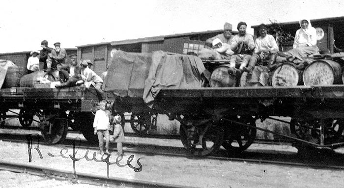

CONFLICT EXTINGUISHED(?)
With the end of the war, the Russian Communist Party (Bolsheviks) no longer faced an acute military threat to its existence and power. However, the perceived threat of continued popular discontent, combined with the failure of socialist revolutions in other countries, such as the German revolution of 1918–1919, contributed to the continued militarization of Soviet society.
The Bolsheviks managed to consolidate control over Russia, but were only partially successful at re-establishing territorial control of the other provinces of the former Russian Empire. The treaty of Riga, which was signed in March 1921 after the Polish–Soviet War, split the territories in Belarus and Ukraine between the Republic of Poland and Soviet Russia. Estonia, Finland, Latvia, and Lithuania all repelled Soviet invasions, while Armenia, Azerbaijan and Georgia were occupied by the Red Army.
